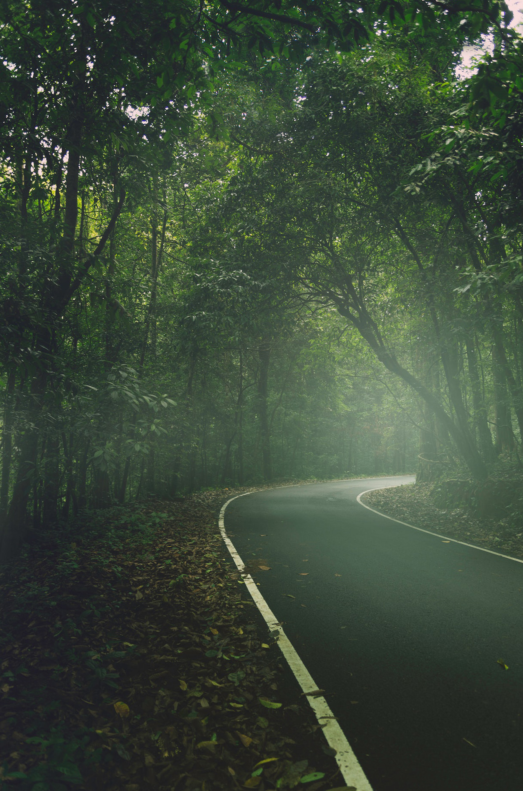
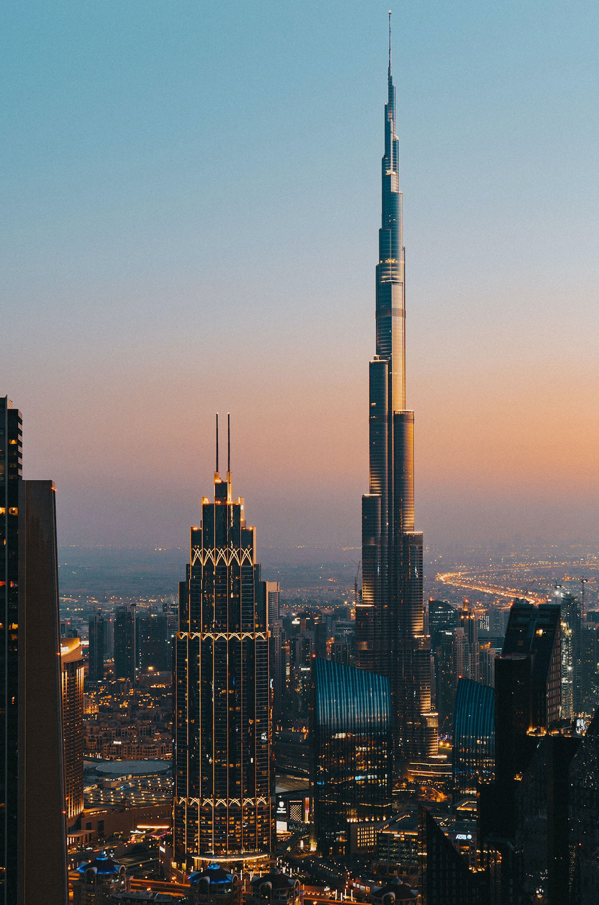
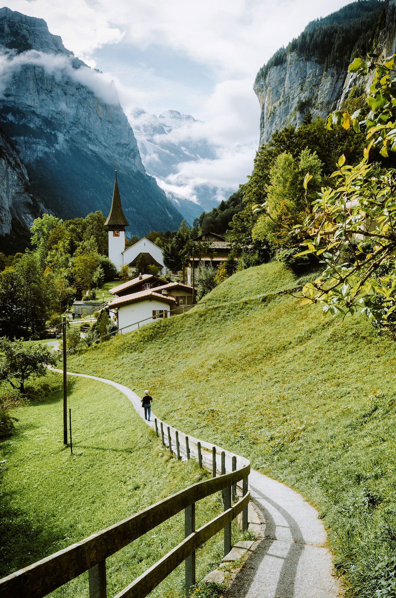
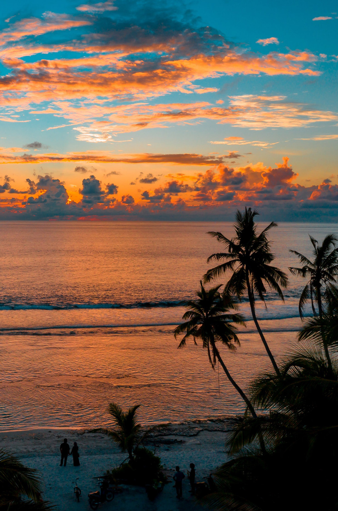
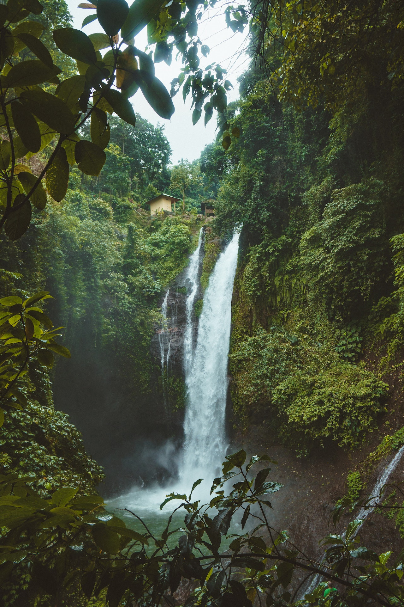

Explore The Unexplored!!
Mysore
Mysore, often referred to as the "City of Palaces," is a historical and cultural gem located in the state of Karnataka, India. Known for its majestic palaces, royal heritage, and vibrant traditions, Mysore is a major tourist destination that reflects a blend of ancient charm and modern vibrancy. Here’s an overview of Mysore:
Mysore's blend of royal splendor, cultural richness, natural beauty, and spiritual heritage makes it a destination worth exploring. From palaces and gardens to temples and festivals, the city offers a glimpse into the glorious history of the Wodeyars, who ruled Mysore for several centuries.

Mysore's blend of royal splendor, cultural richness, natural beauty, and spiritual heritage makes it a destination worth exploring. From palaces and gardens to temples and festivals, the city offers a glimpse into the glorious history of the Wodeyars, who ruled Mysore for several centuries
bengloru
Bangalore (officially Bengaluru), known as the "Garden City of India," is a thriving metropolis in the southern state of Karnataka. It is renowned for its beautiful parks, vibrant culture, pleasant weather, and booming tech industry. As a tourist destination, Bangalore has something to offer everyone—be it nature lovers, history buffs, adventure seekers, or shopaholics. Here are some of the key highlights of Bangalore tourism:
Bangalore’s cosmopolitan vibe, combined with its rich history and greenery, makes it a unique destination. From exploring palaces and parks to enjoying craft beers and shopping, this city offers a complete package for visitors.

1. Hagia Sophia: This iconic landmark was originally built as a cathedral in the 6th century and later converted into a mosque during the Ottoman Empire. Today, it serves as a museum and showcases an impressive mix of Byzantine and Ottoman architectural styles. Explore its grand domes, intricate mosaics, and rich history that spans over 1,500 years. An extraordinary testament to human creativity and architectural brilliance, it is an iconic symbol of Istanbul's rich history that carries immense cultural and historical importance, representing the city's vibrant heritage and the transition from Christianity to Islam.
2. Blue Mosque (Sultan Ahmed Mosque): Known for its striking blue tiles that adorn its interior, the Blue Mosque is a masterpiece of Ottoman architecture. Located just opposite Hagia Sophia, the mosque's six minarets and stunning domes create a mesmerising sight. Visitors can experience the serene ambiance of this functioning mosque while respecting its religious significance.
Uttar Kannada
Uttara Kannada (or North Canara) is a district in the Indian state of Karnataka. Known for its scenic landscapes, pristine beaches, dense forests, rich cultural heritage, and beautiful temples, Uttara Kannada is a haven for nature lovers, history buffs, and adventure enthusiasts. It stretches along the Arabian Sea coast and is dotted with the Western Ghats, making it a unique blend of coastline, forests, rivers, and hills. Here's a glimpse into what makes Uttara Kannada special:
Uttara Kannada is a district that combines natural beauty, adventure, spirituality, and cultural heritage in a perfect blend. It’s a great destination for travelers seeking a mix of beach retreats, wildlife adventures, historical explorations, and cultural experiences
Each and every season in murudeshwar brings in an environment of joy here. tHe year starts with winter and last till february. Next followi g by Spring, it last till May, June welcomes Summer season in murudeshwar last till August.

Shivamogga
Shivamogga (also spelled Shimoga) is a city in the state of Karnataka, India, and serves as the administrative headquarters of the Shivamogga district. Often referred to as the "Gateway of Malnad," Shivamogga is known for its scenic beauty, rich cultural heritage, and historical significance.

Beaches in Bali Shivamogga is an emerging urban center with well-developed infrastructure, making it an ideal base for exploring the Malnad region and its various natural attractions.
Dubai
Dubai is an ideal holiday destination for families, with theme parks, beaches, Friday brunches and more to keep everyone happy. The famous Burj Khalifa, the tallest building in the world, is well worth the entrance fee. Burj Al-Arab, often touted as the world's only 7-star hotel, remains underwhelming. Similarly, the Aquaventure Water Park at the Palms Atlantis Hotel is not to be missed. Jumeriah Beach Residence is well established as Dubai's most popular beachfront, and its close proximity to a whole host of restaurants, cafes and shops make it more than worthy of its status.

Geneva
The charming city of Geneva comes with a plethora of attractions and tremendous natural beauty that makes every traveler fall in love with it. However, because of this overabundance of attractions, it becomes difficult for the backpackers to determine where to go first. Most of them generally miss out on all the best things that this fantastic city has to offer. The capital of Switzerland and a beautiful lakeside city, Geneva is home to many international organisations like the UN.

Port Blair
Port Blair is an alluring destination for tourists as it includes a host of attractive locales. There are shimmering but clean beaches, beaches that defy the ferocity of sea and let tourists swim leisurely, relics of colonial power and oppression, many must-go museums, libraries, coral reefs, and more.

Rome
The capital of one of the most powerful ancient empires in the world, Rome is a fascinating place that has inspired people to visit for millennia. With incredible works of art, a leisurely pace of life and world-renowned cuisine, the Eternal City is worth a visit at least once, though it would take a lifetime to see all it has to offer.

Rome's two most popular tourist destinations are the Vatican Museums (with over 4.2 million tourists per year, making them the world's 37th most visited destination) and the Colosseum(with around 4 million tourists a year, making it the world's 39th most popular tourist destination)